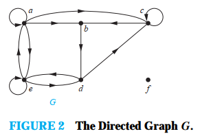

Вежба 1-3. Да се најде бројот на јазли, број на ребра, степен на секој
јазол во неориентираниот граф. Да се одредат сите изолирани и приврзани јазли.
Број на јазли `v = 6`
Број на јазли `v = 5`
Број на јазли `v = 9`
a)
Решение
Број на ребра `e = 6`
Степен на секој јазол:
`deg(a) = 2`
`deg(b) = 4`
`deg(c) = 1`
`deg(d) = 0`
`deg(e) = 2`
`deg(f) = 3`
Изолиран јазол - `d`
Приврзан јазол - `c`.
Решение
Број на ребра `e = 11`
Број на алки `e = 2`
Степен на секој јазол:
`deg(a) = 6`
`deg(b) = 6`
`deg(c) = 6`
`deg(d) = 5`
`deg(e) = 3`
Изолиран јазол - нема
Приврзан јазол - нема`
Решение
Број на ребра `e = 12`
Степен на секој јазол:
`deg(a) = 3`
`deg(b) = 2`
`deg(c) = 4`
`deg(d) = 0`
`deg(e) = 6`
`deg(f) = 0`
`deg(g) = 4`
`deg(h) = 2`
`deg(i) = 3`
Изолиран јазол - `d, f`
Приврзан јазол - нема`
Вежба 4. Да се најде сумата на степени на јазлите во секој граф од вежбата
1-3 и да се потврди дека е еднакво на двојната вредност на ребрата во графот.
Станува збор за едноставен граф.
1) `2*e = 2 + 4 + 1 + 0 + 2 + 3 = 12 -> e = 6`;
2) `2*e = 6 + 6 + 6 + 5 + 3 = 16 -> e = 13`;
3) `2*e = 3 + 2 + 4 + 0 + 6 + 0 + 4 + 2 + 3 = 24 -> e = 12`;
Решение
Степен на едно теме во неориентиран граф е бројот на ребра кои се поврзани со
него, освен што алка се брои два пати.
Забелешка: Теоремата на ракување важи кога има повеќекратни ребра и алки
Вежба 5. Постои ли едноставен граф со 15 јазли секој со степен пет?
Според теорема на ракување, следи
Решение
`2*e = 15 *5 = 75`
`e = 37,5`
Не постои.
Вежба 6. Да се покаже дека сумата, на множе ството луѓе на една забава, f
people at a party, од бројот на луѓе со кого личноста се ракувала е парен број. Да се
претпостави дека никој не се ракува сам со себе.
Нека `V` (јазлите) е множеството на луѓе на забвата
`■`
Решение
Нека `E`(ребра) е множеството на луѓе на забавата кои се ракувале со `u`.
Ребрата на графот треба да се неориентирани бидејки ако личноста `u` се ракувала
со личноста `v` значи дека и личноста `v` се ракувал со личноста `u`.
Според теоремата на ракување, сумата на степените од множеството од сите луќе на
забавата е парен број.
Бидејки степенот го претставува бројот на луѓе со кого личноста се поздравила,
сумата од бројот на луѓе со кои личноста се поздравиле е парен..
Вежба 7-9. Да се одреди бројот на јазли и ребра и да се најде влезниот и
излезниот степен на секој јазол за ориентираниот мултиграф.
Број на јазли `v = 4`
Број на јазли `v = 4`
Број на јазли `v = 4`
7)
Решение
Број на ребра `e = 8`
Влезен степен на секој јазол:
`deg^(-)(a) = 3`
`deg^(-)(b) = 1`
`deg^(-)(c) = 2`
`deg^(-)(d) = 1`
Излезен степен на секој јазол:
`deg^(+)(a) = 1`
`deg^(+)(b) = 2`
`deg^(+)(c) = 1`
`deg^(+)(d) = 3`
Решение
Број на ребра `e = 10`
Влезен степен на секој јазол:
`deg^(-)(a) = 2`
`deg^(-)(b) = 3`
`deg^(-)(c) = 2`
`deg^(-)(d) = 1`
Излезен степен на секој јазол:
`deg^(+)(a) = 2`
`deg^(+)(b) = 4`
`deg^(+)(c) = 1`
`deg^(+)(d) = 1`
Решение
Број на ребра `e = 10`
Влезен степен на секој јазол:
`deg^(-)(a) = 6`
`deg^(-)(b) = 2`
`deg^(-)(c) = 2`
`deg^(-)(d) = 4`
`deg^(-)(е) = 0`
Излезен степен на секој јазол:
`deg^(+)(a) = 1`
`deg^(+)(b) = 5`
`deg^(+)(c) = 5`
`deg^(+)(d) = 2`
`deg^(+)(е) = 0`
Вежба 10. За секој граф од вежбите 7–9 одреди ја сумата на влезните јазли и
сумата на излезните јазли, дирекно. Да се покаже дека сумите се еднакви со бројот на ребра
во графот.
7) deg^(-) = deg^(-)(a) + deg^(-)(b) + deg^(-)(c) + deg^(-)(d) = 7
`■`
Решение
deg^(+) = deg^(+)(a) + deg^(+)(b) + deg^(+)(c) + deg^(+)(d) = 7
e = 7
8) 8, 8, 8
9) 13, 13, 13
Вежба 11. Да се конструира изведен неориентиран граф заграфот со
ориентирани ребра од сликата 2.
Неориентираниот граф кој е резултат на игнорирање на ориентираноста на ребрата
се нарекува изведен неориентиран граф. Ориентираниот граф и изведениот
неориентиран граф имаат ист број на ребра.
`■`

Решение
Значи треба само да се избришат ознаките (стреликите) за ориентираност.
Вежба 12. Што претставува степенот на јазел во графот на познаства и
пријателства, каде јазлите ги претставуваат сите луѓе на светот? Што претставува соседството
на јазли? Што претставуваат изолираните и приврзаните јазли? Во една студија е наведено дека
просечен степен на јазел во овој граф е 1000. Што тоа значи?
a) степен на јазел - број на познанства
b) соседство на јазли - сите познати
c) изолиран јазол - нема познанства
d) приврзан јазол - познава само еден човек
e) човек просечно познава 1000 луѓе.
`■`
Решение
Вежба 14. Што преставува степенот на јазел во графот на Холивуд? Што
преставува соседството на јазли? Што претпоставуваат изолираните и приврзаните јазли?
Нека е `V` множество од сите јазли (глумци) и `Е` множество од ребра (филмови на
кои работел глумецот).Решение
степен на јазел - број на филмови во кои глумецот работел
соседство на јазли - сите глумци со глумецот работел на филмови
изолиран јазол - не глумел нигде
приврзан јазол - глумел само во еден филм
Вежба 17. Што претставуваат влезните и излезните степени на јазелот во
ориентиран граф за турнир.
влезни степен - изгубен меч
излезан степен - добиен меч
Решение
Вежба 18. Ова е задача 6 од аудиториски вежби.
Вежба 19. Ова е задача 7 од аудиториски вежби.
Вежба 21-25. Нацртај ги следните графови:
Вежба 9 од аудиториски вежби.
Ова е тркало граф, кој се добива кога на циклус графот му се додава дополнителен
јазол и истиот се повре со сите јазли во циклус графот.
Ova e `n` коцка граф, кој има јазли кои претставуваат `2^n` низа со должина `n`
(`2^4 = 16` jазли). Два јазли се соседни ако и само ако бројните низи кои ги
претставуваат се разликуваат во еден бит.
a) `K_7`, b) `K_(1,8)`, c) `K_(4,4)`, d) `C_7`
Решение
Решение
Решение
Вежба 26. За кои врености на `n` следните графови се дводелни?
За `n = 1` ако е дозволено да `V_1` или `V_2` биде празно множество.
Ако `n` е парен број тогаш графот е двореден.
Не е дводелен бидејки централниот јазол е соседен со секој јазол.
Е биполарен за сите вредности на `n` бидејки зголемувањето на доведува до
додавање на јазли со спротивна боја.
a) `K_n`
Решение
За `n = 2` ако `V_1` и `V_2` имаат по еден јазоло.
За `n => 3` графот не е дводелен.
Решение
Ако `n` е непарен број тогаш графот не е двореден.
Решение
Решение
Вежба 27. Да претпоставиме дека има четворица запослени во групата за
компјутерска подршка на факултетот. Секој запослен дава подршка на различна област :
hardware, software, networking, and wireless. Господинот Ping е квалификуван за hadware,
networking, and wireless; Quiggley е квалификуван за software and networking; Ruiz е
квалификуван за networking and wireless, и Sitea е квалифицирана за hardware and
software
НЕ Е ПРЕДАВАНО!
Бидејки секој јазол кој претставува област (хардвер, софтвер, ..) има степен
најмалку 2, условот на Халовата теорема е исполнет за множества со големина
помала од 3. Може да се провери дека бројот на запослени кваливикувани за секое
од четирите подмножества со големина 3 е најмалку 3 и да се потврди дека бројот
на запослени за секое од подмножествата со големина 4 има големина 4.
Се започнува од јазол од множеството на запослени кој има најмал степен, во
нашиот случај Siltea li Ruiz. Нека отпочнеме со Siltea, која е обучена за
Hardware и Software. Нека нејзе и ја доделиме работата Software а реброто кон
Hardware го избришеме. Сега запослениот Ruiz има најмал степен. Ruiz e обучен за
Networking и Wireless. Нека му ја доделиме работата Wireless а реброто кон
Networking го бришеме. Сега Quiggly има најмал степен и нека нему му ја доделиме
работата Networking а реброто кон Software го бришеме бидејки работната задача е
веќе доделена. Остана само уште Ping кој ја добива работната задача Harware. Со
ова на секоја работна задача и доделивме запослен и нема запослен кој има повеќе
од една работна задача. На долниот граф релацијата работник - работна задача е
означена со ребро во зелена боја.
а) Со помош на дводелен граф да се изгради модел за четворицата запослени и нивните
квалификации.
Решение

Решение
Решение

Вежба 29. Ова е задача 11 од аудиториски вежби.